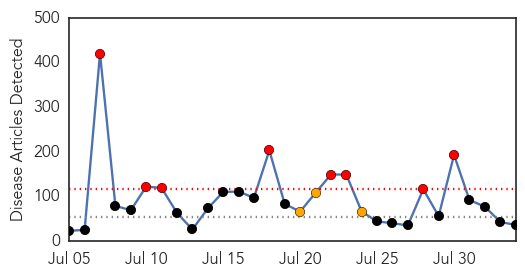
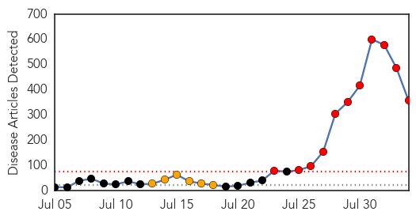

Unknown
30-Day Web Trend
8 alerts, 3 warnings

30-Day Twitter Trend
2 alerts, 0 warnings

Article Locations

Article Confidences

Top Articles:
- 0.982
- Ramadan pilgrimage season in Saudi Arabia mostly free from MERS
- 0.982
- Ramadan pilgrimage season in Saudi Arabia mostly free from MERS
- 0.970
- Ramadan pilgrimage season in Saudi Arabia mostly free from MERS
- 0.929
- NSW woman dies from meningococcal disease
- 0.922
- Ramadan pilgrimage season in Saudi Arabia mostly free from MERS
- 0.917
- Chicago Tribune
- 0.866
- Lebanon's army chief says border town attack was premeditated
- 0.866
- Islamic State seizes another northern Iraqi town
- 0.866
- Israeli strike kills 7 at U.N. school in Gaza
- 0.866
- A relative reacts at a badly damaged house in Jabaliya refugee camp in the northern Gaza Strip
- 0.866
- A fallen plantain tree is pictured after heavy rain, due to Tropical Storm Bertha passing through southern Puerto Rico, in Aceituna town
- 0.866
- Magnitude 6.6 earthquake strikes near Papua New Guinea; no tsunami expected
- 0.848
- Japanese Encephalitis continues to wreak havoc in Assam
- 0.748
- Chickenpox at NM FLETC prompts quarantine lockdown
- 0.737
- Ohio declares emergency as contamination leaves 400,000 without safe drinking water
- 0.731
- Swimmers: avoid contaminated waters (updated)
- 0.705
- Pune landslide: Maharashtra on guard to check for water contamination
- 0.694
- Crib deaths back in Bengal
- 0.658
- UN warns of 'rapidly unfolding' health disaster in Gaza
- 0.635
- UN warns of 'rapidly unfolding' health disaster in Gaza
- 0.598
- Toxins in water leads to state of emergency in Ohio
- 0.579
- Video: Gaza refugees return home to devastation
- 0.579
- US border crisis: 'The children are refugees, not immigrants'
- 0.579
- UN warns of 'humanitarian tragedy' as ISIS seizes Sinjar
- 0.579
- Scores killed as troops clash with rebels in Damascus area
- 0.579
- Israel says missing soldier was 'killed in battle'
- 0.579
- In pictures: French and German leaders mark WWI centenary
- 0.579
- Hundreds dead after quake strikes Yunnan province
- 0.579
- US doctor infected with Ebola arrives home for treatment
- 0.566
- Why seek treatment abroad, asks Msipa
- 0.553
- Toledo water improving but toxins still a concern for 2nd day
- 0.553
- Toledo water improving but toxins still a concern for 2nd day
- 0.537
- Some 400,000 in Ohio without drinking water, tests show lower toxin levels
- 0.521
- Health personnel asked to increase home-based care
- 0.512
- Some 400,000 in Ohio without drinking water, tests show lower toxin levels
- 0.503
- Showering declared potential hazard in Toledo, Ohio
Top Tweets:
- 0.699
- RT: Toda fiebre en la vuelta de un viaje tropical es malaria mientras no se demuestre lo contrario
- 0.649
- RT: Cada día 1.600 niños menores de 5 años mueren en Zambia por NO tener agua potable. Más que el sida y la malaria juntos en tod…
- 0.624
- RT: Paludismo fiebre amarilla malaria etc todos estos virus acabados hace anos y aqui de moda nuevamente. No cabe duda q hemo…
Ebola
30-Day Web Trend
11 alerts, 6 warnings

30-Day Twitter Trend
5 alerts, 0 warnings

Article Locations

Article Confidences

Top Articles:
- 1.000
- Ebola virus outbreak worsens as area medical officials are on alert
- 1.000
- First of two US doctors arrives home for Ebola treatment
- 1.000
- First of two US doctors arrives home for Ebola treatment
- 1.000
- Turkish Health Ministry takes precautions against Ebola outbreak
- 1.000
- Prepared to fight Ebola
- 1.000
- Malaysia taking measures against Ebola, says minister
- 1.000
- Union calls for stringent checks on ships coming from Ebola-hit countries
- 1.000
- First of two US doctors arrives home for Ebola treatment
- 1.000
- First of two US doctors arrives home for Ebola treatment
- 1.000
- Fast Facts
- 1.000
- First of two US doctors arrives home for Ebola treatment
- 1.000
- Headlines, News, The Philippine Star
- 1.000
- Cebu Lifestyle, The Freeman Sections, The Freeman
- 1.000
- First of two US doctors arrives home for Ebola treatment
- 1.000
- Ebola running wild, WHO warns
- 1.000
- First of two US doctors arrives home for Ebola treatment
- 1.000
- First of two US doctors arrives home for Ebola treatment
- 1.000
- U.S. Doctor With Ebola Virus Arrives for Treatment
- 1.000
- American Ebola Victim Returns to US
- 1.000
- First of two US doctors arrives home for Ebola treatment
- 1.000
- First of two US doctors arrives home for Ebola treatment
- 1.000
- Ebola Fears Grow With Asia On Alert
- 1.000
- First of two US doctors arrives home for Ebola treatment
- 1.000
- U.S., foreign health workers to flock to West Africa amid Ebola crisis
- 1.000
- Ebola stalks West Africa
- 1.000
- Africa's Ebola fight weakens by spread among health workers
- 1.000
- First of two US doctors arrives home for Ebola treatment
- 1.000
- Ebola scare: Is SA doing enough? - South Africa
- 1.000
- Ebola outbreak: Infected American missionary Dr Kent Brantly arrives back in the US – and walks straight into isolation
- 1.000
- Ebola outbreak: Emirates becomes first major international airline to suspend all flights to virus-affected region
- 1.000
- Fuad: T&T ready to tackle Ebola virus
- 1.000
- American Ebola Victim Returns to US
- 1.000
- Military Responders Help Battle Ebola Outbreak
- 1.000
- Ebola: The disease is not the real problem
- 1.000
- Americans warned to avoid travel to Guinea, Liberia and Sierra Leone over Ebola fears
- 1.000
- Terrorists could use Ebola to 'create dirty bomb to kill large numbers in UK'
- 1.000
- Why it is harder to contain this Ebola epidemic
- 1.000
- First of two US doctors arrives home for Ebola treatment
- 1.000
- First of two US doctors arrives home for Ebola treatment
- 1.000
- First of two US doctors arrives home for Ebola treatment
- 1.000
- U.S. victim of Ebola arrives in Atlanta
- 1.000
- Ebola outbreak: US warns disease remains out of control as American aid worker returns for treatment
- 1.000
- Dr. Kent Brantly Arrives In U.S. For Treatment Of Ebola
- 1.000
- ​Ebola-infected US aid worker arrives in ‘special isolation unit’ in Atlanta — RT News
- 1.000
- Ebola Comes to the US
- 1.000
- Are You Worried About an Ebola Outbreak in America? Check This Helpful Chart
- 1.000
- Why is Ebola spreading?
- 1.000
- Taxis, planes and viruses: How deadly Ebola can spread
- 1.000
- donga.com[English donga]
- 1.000
- Physician arrives in U.S. for Ebola treatment
Showing top 50 articles...
Top Tweets:
- 0.975
- RT: Falando nessa parada de ebola que Doidera essa parada pqp ! Ainda q br perigo é malariafebre amarela sarampo raiva…
- 0.958
- RT: @RamonElosegui Esperemos que tanto en la Malaria como en el Ebola se avance rápidamente pero no tiene buena pinta..
- 0.952
- RT: If you have flu or malaria type symptoms chances are Ebola!!!
- 0.938
- RT: This TEAM of killers..Tuberculosis Ebola AIDS Malaria..Ebola
- 0.917
- RT: [Ebola: Ressemblance de symptômes initiaux au rhume quoi. "malaria typhus choléra-fièvre élevée courbatures céphalé…
- 0.904
- RT: Jackson14 Ebola:Init symps viral synd:feverN/Vmyalgias. Compl by endemic malaria "Not all fevrs Ebola but malaria dx …
- 0.854
- RT: Ebola virus jst made HIV sound like malaria
- 0.826
- RT: @haymack14 (she's in Africa rn trying not to get malaria or Ebola)
- 0.825
- RT: EBOLA virus just made HIV sound like malaria üòì
- 0.810
- RT: 2014 stats: Deaths from ebola: 827. Deaths from flu: c.100000. Deaths from malaria: c.800000. A little fucking …
- 0.800
- RT: @MarcoMariani_IT gente che teme l'ebola E in africa si muore per la curabilissima malaria Andatevene a fanculo
- 0.796
- RT: It sounds like the disease in the movie "dooms day" ScaryMovie: EBOLA virus just made HIV sound like malaria …
- 0.749
- RT: “@imnotpeyton: i think i have malaria” aculy am Ebola
- 0.722
- RT: @jsaideepak Cerebral malaria or ebola?
- 0.712
- RT: Terrible situation re ebola. When I was ill I was relieved it was malaria because I’d been in ebola zone. Malaria is sick…
- 0.711
- RT: @einstein_agogo please remind people more died of malaria last night than the entire number of people ever recorded of Ebola
- 0.624
- RT: Malaria in SO-Asien - Ebola in AFRIKA (resistente Viren) und der Mensch "spielt überall Krieg" (welch Irrsinn )
- 0.599
- RT: Dear aliens Earth is awesome except for Malaria Ebola Flu and a few other diseases. If u could help with those we…
- 0.592
- RT: 23. The early symptoms of Ebola mimicks malaria and typhoid fever which includes headache sorethroatrash.
- 0.544
- RT: @NTANewsNow so how do you differentiate btwn Ebola and malaria fever
- 0.526
- RT: @con_news Yes and malaria too. Ebola could be a threat but we must ensure concerns & action are driven by medical fact not med…
- 0.524
- RT: Ebola symptoms can take 2 -21 days to show. It usually start in the form of malaria or cold followed by Fever Diarrhoea V…
- 0.520
- RT: Ebola symptoms can take 2 -21 days to show. It usually start in the form of malaria or cold followed by Fever Diarrho…